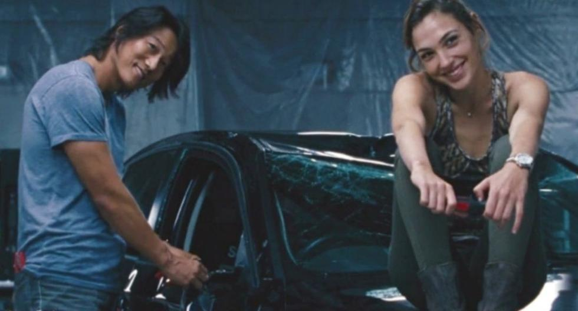
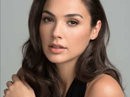

HAN LUE: Han Lue, también conocido por el alias Han Seoul-Oh, es un personaje ficticio de la franquicia The Fast and the Furious, interpretado por Sung Kang. El personaje apareció originalmente en la película Better Luck Tomorrow, luego apareció en The Fast and the Furious: Tokyo Drift en Tokio como el mentor de Sean Boswell, aparentemente muriendo en una colisión en el clímax de la película. El estado de Han como miembro del equipo de Dominic Toretto se mostró en las películas posteriores Fast & Furious, Fast Five, Fast & Furious 6 y Furious 7, así como en el cortometraje Los Bandoleros, todo ambientado entre los eventos de Better Luck Tomorrow y Tokyo Drift. Recientemente apareció en F9, su primera reaparición se estableció después de los eventos del largometraje en Tokio. El personaje apareció originalmente en Better Luck Tomorrow, dirigido por Justin Lin. Cuando Lin fue reclutado para dirigir The Fast and the Furious: Tokyo Drift, propuso la idea de agregar un personaje asiático para ser el «tipo genial» específicamente con Han Lue en mente. Se suponía que Kang solo aparecería en una sola vez, pero fue traído de vuelta en las películas de precuelas posteriores debido a las respuestas positivas del público
GISELE YASHAR
Gisele Yasharnota es un personaje ficticio interpretado por la actriz israelí Gal Gadot, que aparece en la franquicia The Fast and the Furious. Introducida en la película de 2009 Fast & Furious, ayuda al equipo de Dominic Toretto mientras forma una relación romántica con el miembro del equipo Han Lue. El personaje es asesinado en la película de 2013 Fast & Furious 6. Yashar fue el primer papel importante de Gadot, y el director estadounidense Justin Lin la contrató debido a su experiencia militar pasada. Gadot realizó sus propias acrobacias mientras filmaba las películas. Los medios de comunicación caracterizaron a Yashar a través de su sexualidad. Las reacciones al personaje fueron mixtas: algunos críticos elogiaron la representación de la sexualidad de Yashar y su relación con Lue; mientras que otros sintieron que su personaje no era realista o representaba una parte del mal trato que la franquicia da hacia las mujeres. La actuación de Gal Gadot recibió comentarios positivos, y varios críticos le pidieron que repitiera el papel en una futura película. En Fast & Furious (2009), Gisele Yashar (Gal Gadot) se presenta como un enlace para el narcotraficante Arturo Braga (John Ortiz). Ella desarrolla sentimientos románticos por Dominic Toretto (Vin Diesel), pero este rechaza sus insinuaciones.